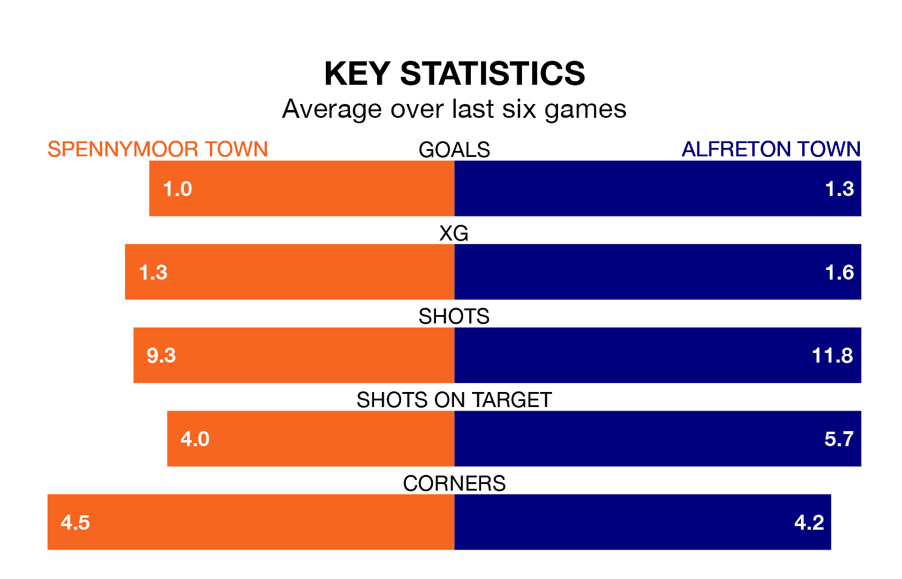

Spennymoor Town are on a terrible run ahead of hosting Alfreton Town at the Brewery Field on Tuesday, with just two points collected from their last six games.
Spennymoor have picked up two draws and four losses in their last six National League North games, and face a Reds side whose last six games have brought two wins and two draws.
With 44 goals in 25 games so far this season, Alfreton are the league's joint-third-highest scorers with 1.8 goals per game. And they are conceding fewer than average, letting in 31 goals at a rate of 1.2 per game.
Spennymoor are also above average scorers, with 1.5 goals per game, compared to a league average of 1.3. They have conceded 1.7 goals per game.
In the last 10 years, Spennymoor and Alfreton have played each other on 11 occasions. Spennymoor won five of them, Alfreton three, and they drew three times.
On average, Spennymoor scored 2.4 goals and the Reds 1.2 in those matches.
Their last meeting was on March 28, when Alfreton won 3-2 at home.
Spennymoor Town are 17th in the table after 26 games, of which they have won nine and drawn five, earning 32 points.
Alfreton Town are nine places ahead of the home team in eighth, with 12 wins and six draws putting them on 42 points.
Spennymoor's last match was on January 9, a 1-1 draw against Scarborough Athletic.
Alfreton beat Buxton 2-1 last time out, on December 26.
Updated: 14:53 (UTC), 16/01/24